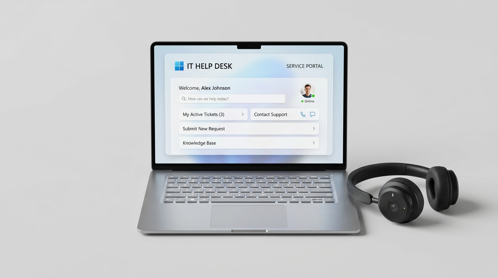
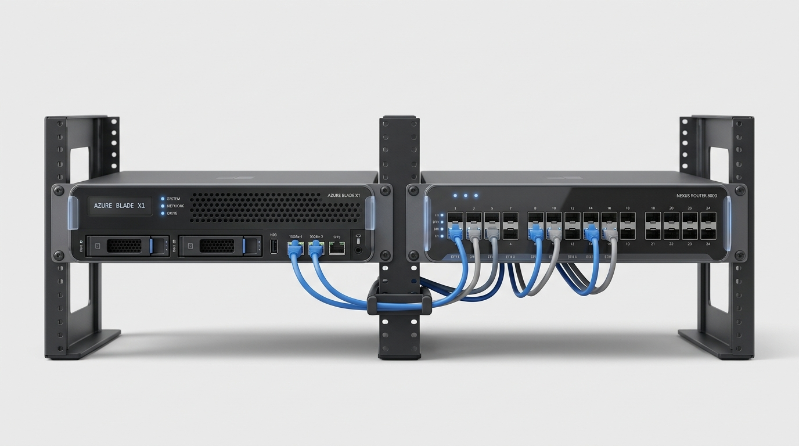
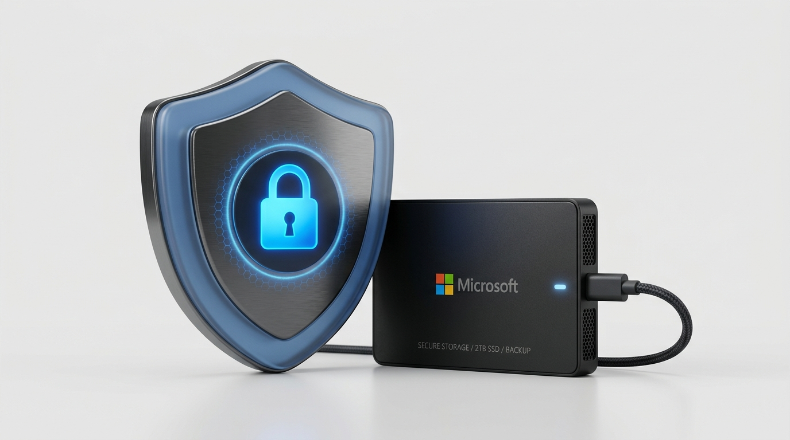
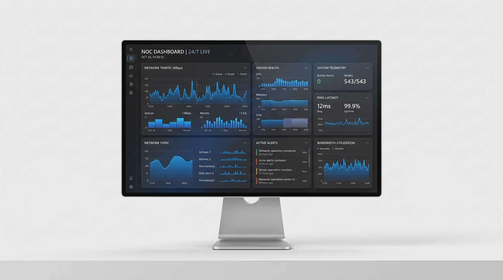

Suporte
Atendimento técnico ágil e resolutivo para manter os colaboradores da sua empresa sempre operando sem interrupções.
Gerenciamos sua infraestrutura de TI, segurança e sistemas para sua empresa operar sem interrupções.

Combinamos uso de ferramentas open-source com suporte preventivo, garantindo que sua empresa nunca pare por problemas de TI.

Atendimento técnico ágil e resolutivo para manter os colaboradores da sua empresa sempre operando sem interrupções.

Engenharia e gestão completa de servidores, redes corporativas e ambientes virtualizados de alta disponibilidade.

Camadas robustas de defesa cibernética, imunização contra ransomware e rotinas de backup corporativo.

Supervisão ininterrupta 24/7 com telemetria inteligente para identificar e resolver anomalias antes de causarem paradas.
Cada segmento de mercado possui normas, conformidades e criticidades operacionais distintas. Conheça nossas soluções personalizadas:
Pequenas e médias empresas não precisam pagar licenças abusivas nem manter equipes internas de alto custo. A Nodigital assume a gestão integral da sua TI com suporte ágil e previsibilidade orçamentária.
Atendimento remoto rápido para estações de trabalho Windows, Linux e macOS.
Aproveitamento máximo do hardware existente, rodando AD, File Server e ERPs em instâncias isoladas.
Cópias diárias e semanais fora do escritório para proteção total contra roubo ou sinistro.
Em vez de chamar o técnico apenas quando o sistema quebra ("quebra-paga"), nosso modelo MSP previne falhas através de sensores 24/7. Isso resulta em 90% menos paradas no expediente e redução drástica de prejuízos operacionais.
Solicitar OrçamentoClínicas médicas, hospitais, escritórios de advocacia e contabilidade lidam com informações sensíveis sob constante risco de vazamento e regulamentação rígida.
Pastas restritas, bloqueio de pendrives e trilha de auditoria completa de quem acessou arquivos.
Sua base de clientes ou prontuários fica gravada em volume imutável, impossível de ser sequestrada.
Sócios e colaboradores acessam os sistemas de qualquer lugar com túnel criptografado via OPNSense.
Fornecemos relatórios mensais atestando políticas ativas de proteção de dados e governança de acessos alinhados com as boas práticas de LGPD.
Solicitar OrçamentoChão de fábrica e frentes de caixa exigem latência mínima, isolamento de equipamentos IoT e tolerância a falhas de link de internet.
Dois ou mais provedores de internet trabalhando juntos; se um cair, o outro assume em milissegundos.
Rede de visitantes, rede de PDVs, servidores e máquinas industriais 100% isoladas para segurança.
Cobertura estável para leitores de código de barras, coletores e dispositivos móveis.
Com o NOC 24/7 da Nodigital, oscilações de switches, perdas de pacotes ou saturação de links são identificadas antes de travar a expedição de pedidos.
Solicitar OrçamentoFale diretamente com os arquitetos de soluções da Nodigital. Analisamos sua infraestrutura atual e apresentamos um plano de melhorias sem custos iniciais.